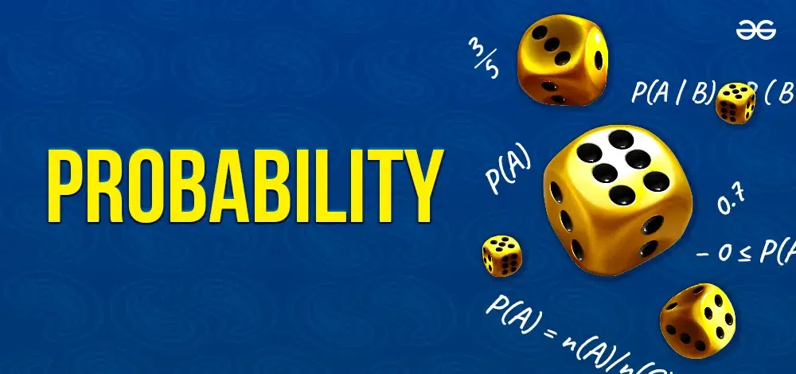

This project focuses on analyzing body fat percentage using various machine learning techniques in R. The goal is to provide insights into body composition based on physical measurements. It utilizes R’s data science ecosystem, including packages like tidyverse, plotly, psych and bbreg for data manipulation, visualization, and model training.
This project aims to explore bank loan default data to uncover actionable insights through detailed analysis and visualizations. Leveraging advanced Excel functions, the project includes a dashboard that highlights key findings, such as loan default rates and the relationship between default risk and various factors.

The Sales and Performance Analysis Dashboard project utilizes Microsoft Power BI to provide a comprehensive analysis of business performance across product lines, customer behavior, branch efficiency, temporal trends, and city-level insights. This interactive dashboard facilitates data-driven decision-making by presenting key performance indicators
This project analyzes the probability distributions from rolling two dice. It focuses on random variables such as the sum, maximum, absolute difference, and product of the dice rolls. Using R, the sample space is generated, and key probabilities are calculated to illustrate basic statistical concepts.
This project analyzes the probability distribution of students using Wikipedia in a sample of 31, using binomial distribution to compute key statistics like mean, variance, and standard deviation and to visualize the probabilty distributions. R is used for calculations and visualization.
This project analyzes the MTcars dataset to explore the relationship between horsepower (hp) and miles per gallon (mpg) using descriptive statistics, Pearson correlation, and linear regression. It highlights how increased horsepower typically reduces fuel efficiency, providing insights for automotive enthusiasts and researchers.

This project serves as an introduction to the fundamentals of probability using R programming. It covers various key concepts including probability calculations, sampling methods, probability distributions, and the application of binomial distributions in real-world scenarios. Through hands-on exercises involving deal selection, group seating probabilities, and sales performance simulations, learners will develop a solid understanding of how probability theory can be applied in practical situations.